Sample photos
Photos of eight herbs common in Vietnam, for trying Med Herb Lens without the plants at hand. Each species is one the app's model knows.
On another screen: open this page on a computer or tablet, then on the Identify tab point the phone's camera at a photo.
On the same phone: touch and hold a photo, choose Save to Photos (on Android, Download image), then on the Identify tab pick it from your photos.
The app is a research preview, so it can still get a species wrong.
Polyscias fruticosa · Đinh lăng

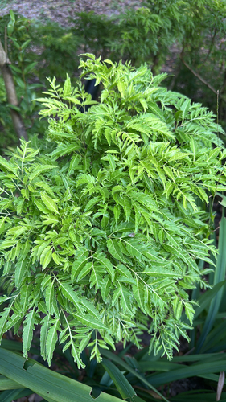

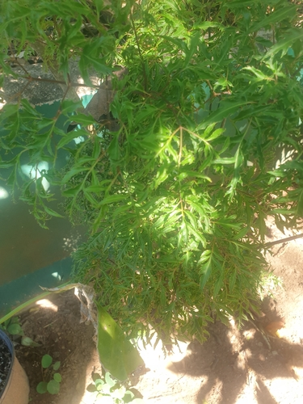

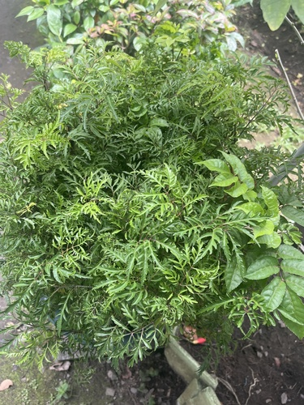
Mentha arvensis · Bạc hà

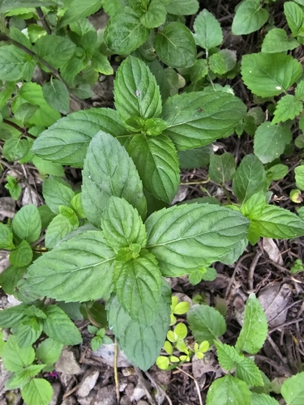

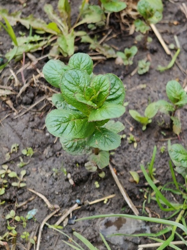

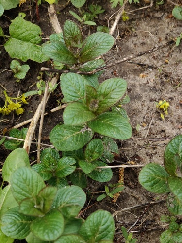
Abelmoschus esculentus · Mướp tây

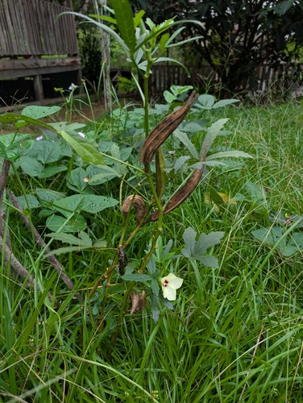

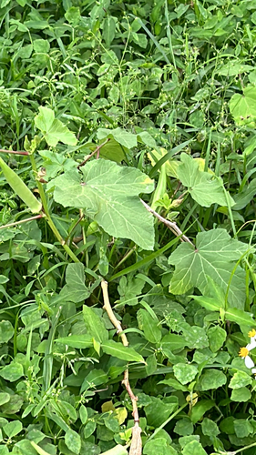

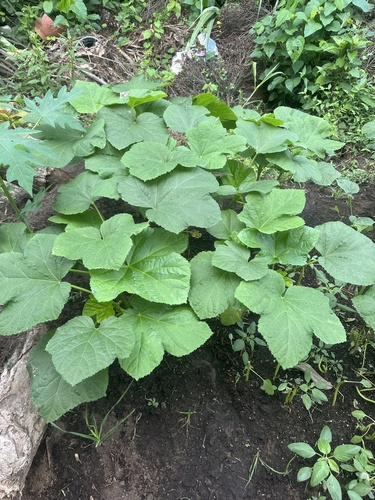
Cordyline fruticosa · Huyết dụ

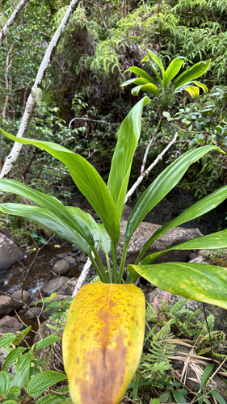

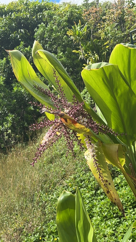

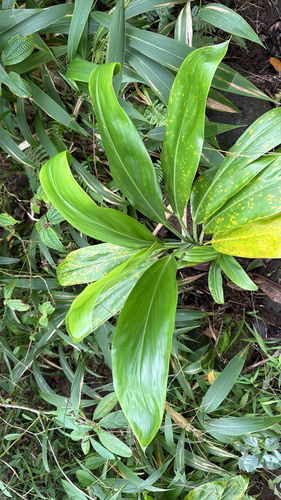
Centella asiatica · Rau má

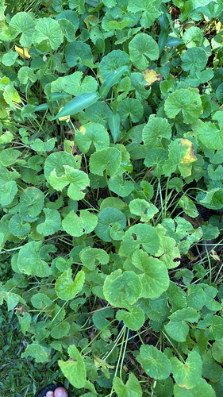

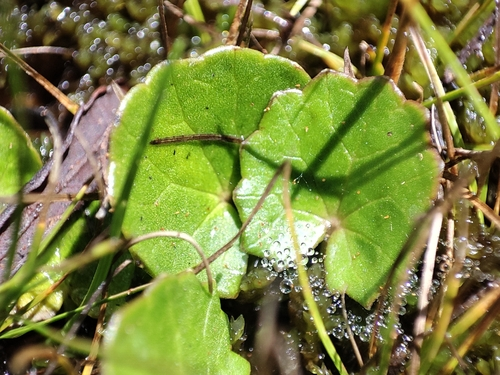

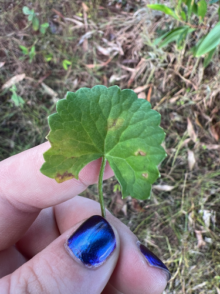
Houttuynia cordata · Diếp cá

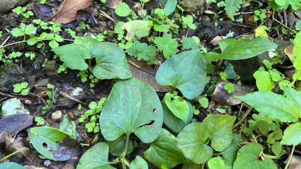

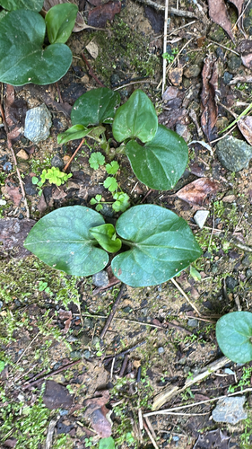

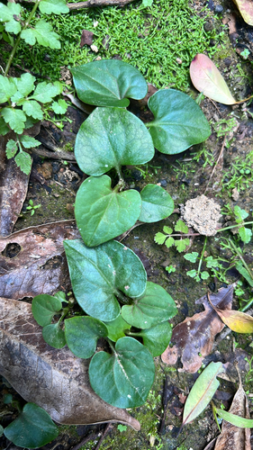
Artemisia vulgaris · Ngải cứu

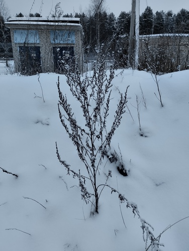

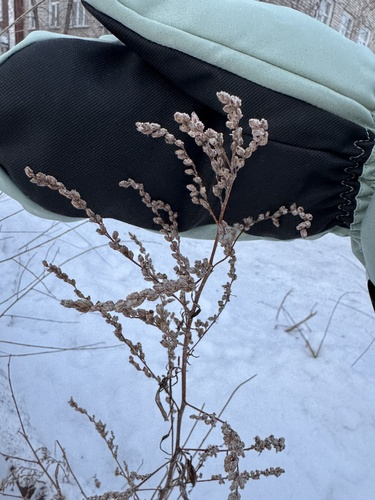

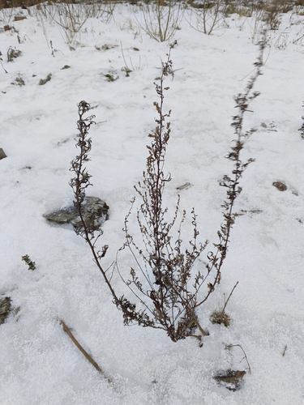
Cymbopogon citratus · Sả

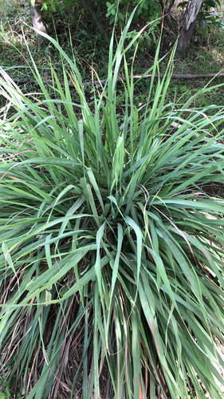

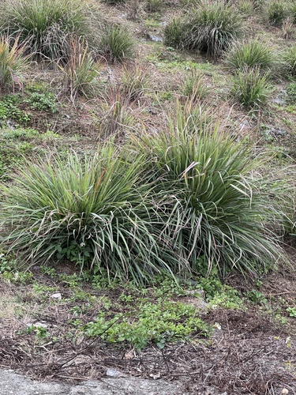

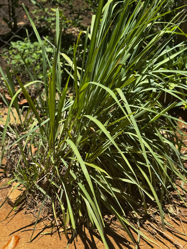